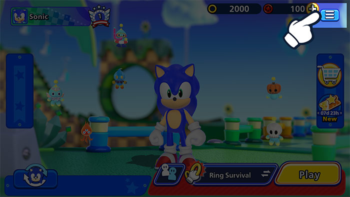
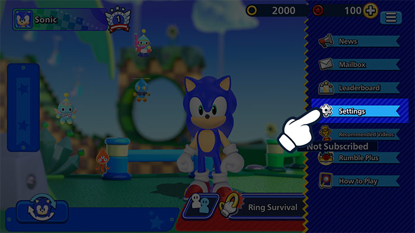
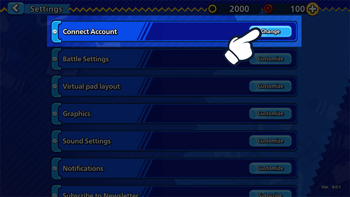
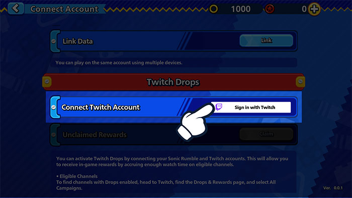
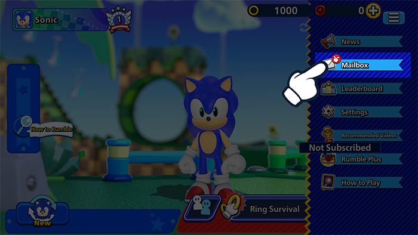
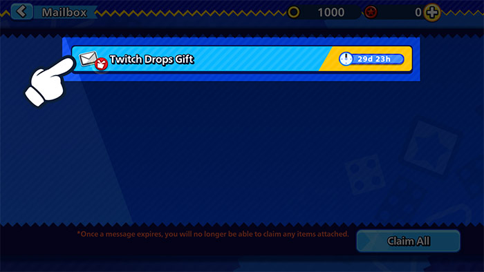

Twitch DropsWatch livestreams and get in-game rewards!
Twitch DropsWatch livestreams and get in-game rewards!
Link your Twitch account now!
How to Link Your Account
1Click the Menu button in Sonic Rumble.

2Go to Settings.

3Click on Connect Account.

4Select Twitch Drops and choose Sign in with Twitch to sign in to your Twitch account.

5This will link your Twitch account to your Sonic Rumble account.
How to Accept Rewards
1Click the Menu button in Sonic Rumble.

2Go to your Mailbox to see your Rewards.

*There may be an issue when collecting rewards if they are sent to your Mailbox during maintenance.
If such an issue occurs, go to Menu > Settings > Connect Account > Twitch Drops and click on the Claim button to resend the rewards to your Mailbox.
FAQ
- QWhat are Twitch Drops?
- AA type of event that allows you to earn in-game rewards just by watching livestreams on Twitch.
You can participate by simply linking your Sonic Rumble account with your Twitch account. - QHow can I receive rewards?
- AActivate the Twitch Drops feature and watch Sonic Rumble livestreams that fulfill the conditions to fill your Drops gauge. You can receive rewards after the gauge is full.
- QHow can I see whether or not I'm currently participating in Twitch Drops events?
- AAccess the Twitch Inventory page here to check all the Twitch Drops events you're participating in and the rewards you have received.
- QHow long does it take for Drops rewards to arrive?
- ARewards are distributed to your in-game Mailbox within 24 hours.
If you wish to unlink your account after receiving your rewards, remember to receive the rewards in your Sonic Rumble account before doing so. - QIf I own multiple Sonic Rumble accounts, am I able to claim rewards for all of them?
- ATwitch Drops rewards can only be claimed once. Each Twitch account can also only be linked to one Sonic Rumble account at a time.
The same type of reward cannot be claimed more than once for each Sonic Rumble account and Twitch account.